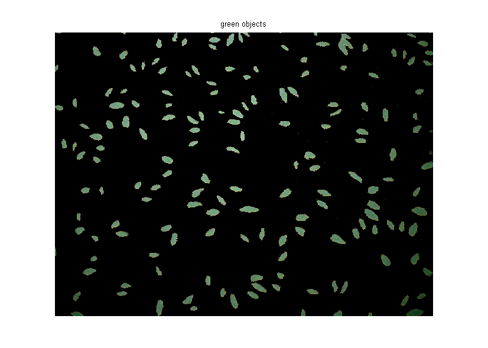

Your goal is to identify different colors in fabric by analyzing the L*a*b* colorspace. The fabric image was acquired using the Image Acquisition Toolbox.
Read in the fabric.png image, which is an image of colorful fabric. Instead of using fabric.png, you can acquire an image using the following functions in the Image Acquisition Toolbox.
% Access a Matrox frame grabber attached to a Pulnix TMC-9700 camera, and % acquire data using an NTSC format. % vidobj = videoinput('matrox',1,'M_NTSC_RGB'); % Open a live preview window. Point camera onto a piece of colorful fabric. % preview(vidobj); % Capture one frame of data. % fabric = getsnapshot(vidobj); % imwrite(fabric,'fabric.png','png'); % Delete and clear associated variables. % delete(vidobj) % clear vidobj; fabric = imread('fabric.png'); figure(1), imshow(fabric), title('fabric');
You can see six major colors in the image: the background color, red, green, purple, yellow, and magenta. Notice how easily you can visually distinguish these colors from one another. The L*a*b* colorspace (also known as CIELAB or CIE L*a*b*) enables you to quantify these visual differences.
The L*a*b* color space is derived from the CIE XYZ tristimulus values. The L*a*b* space consists of a luminosity 'L*' or brightness layer, chromaticity layer 'a*' indicating where color falls along the red-green axis, and chromaticity layer 'b*' indicating where the color falls along the blue-yellow axis.
Your approach is to choose a small sample region for each color and to calculate each sample region's average color in 'a*b*' space. You will use these color markers to classify each pixel.
To simplify this demo, load the region coordinates that are stored in a MAT-file.
load regioncoordinates; nColors = 6; sample_regions = false([size(fabric,1) size(fabric,2) nColors]); for count = 1:nColors sample_regions(:,:,count) = roipoly(fabric,region_coordinates(:,1,count),... region_coordinates(:,2,count)); end imshow(sample_regions(:,:,2)),title('sample region for red');
Convert your fabric RGB image into an L*a*b* image using makecform and applycform.
cform = makecform('srgb2lab');
lab_fabric = applycform(fabric,cform);Calculate the mean 'a*' and 'b*' value for each area that you extracted with roipoly. These values serve as your color markers in 'a*b*' space.
a = lab_fabric(:,:,2); b = lab_fabric(:,:,3); color_markers = repmat(0, [nColors, 2]); for count = 1:nColors color_markers(count,1) = mean2(a(sample_regions(:,:,count))); color_markers(count,2) = mean2(b(sample_regions(:,:,count))); end
For example, the average color of the red sample region in 'a*b*' space is
disp(sprintf('[%0.3f,%0.3f]',color_markers(2,1),color_markers(2,2)));[198.183,149.714]
Each color marker now has an 'a*' and a 'b*' value. You can classify each pixel in the lab_fabric image by calculating the Euclidean distance between that pixel and each color marker. The smallest distance will tell you that the pixel most closely matches that color marker. For example, if the distance between a pixel and the red color marker is the smallest, then the pixel would be labeled as a red pixel.
Create an array that contains your color labels, i.e., 0 = background, 1 = red, 2 = green, 3 = purple, 4 = magenta, and 5 = yellow.
color_labels = 0:nColors-1;
Initialize matrices to be used in the nearest neighbor classification.
a = double(a); b = double(b); distance = repmat(0,[size(a), nColors]);
Perform classification
for count = 1:nColors distance(:,:,count) = ( (a - color_markers(count,1)).^2 + ... (b - color_markers(count,2)).^2 ).^0.5; end [value, label] = min(distance,[],3); label = color_labels(label); clear value distance;
The label matrix contains a color label for each pixel in the fabric image. Use the label matrix to separate objects in the original fabric image by color.
rgb_label = repmat(label,[1 1 3]); segmented_images = repmat(uint8(0),[size(fabric), nColors]); for count = 1:nColors color = fabric; color(rgb_label ~= color_labels(count)) = 0; segmented_images(:,:,:,count) = color; end imshow(segmented_images(:,:,:,2)), title('red objects');
imshow(segmented_images(:,:,:,3)), title('green objects');imshow(segmented_images(:,:,:,4)), title('purple objects');imshow(segmented_images(:,:,:,5)), title('magenta objects');imshow(segmented_images(:,:,:,6)), title('yellow objects');You can see how well the nearest neighbor classification separated the different color populations by plotting the 'a*' and 'b*' values of pixels that were classified into separate colors. For display purposes, label each point with its color label.
purple = [119/255 73/255 152/255];
plot_labels = {'k', 'r', 'g', purple, 'm', 'y'};
figure
for count = 1:nColors
plot(a(label==count-1),b(label==count-1),'.','MarkerEdgeColor', ...
plot_labels{count}, 'MarkerFaceColor', plot_labels{count});
hold on;
end
title('Scatterplot of the segmented pixels in ''a*b*'' space');
xlabel('''a*'' values');
ylabel('''b*'' values');